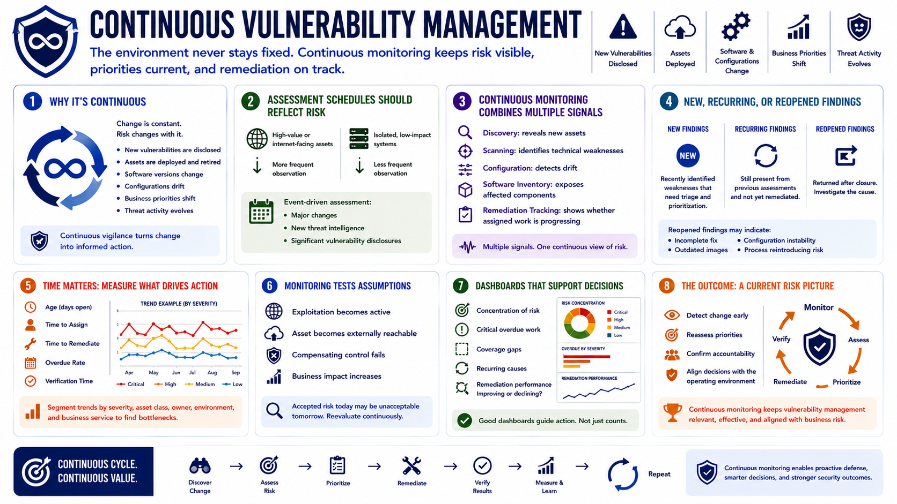

What Is Vulnerability Management?
Continuous Monitoring
Connecting to LMS... Progress: in progress
Version 1.0 | Date: 2026-06-18 | Educational overview of vulnerability management concepts.

Narration
Vulnerability management is continuous because the environment never stays fixed. New vulnerabilities are disclosed, assets are deployed, software versions change, configurations drift, business priorities shift, and threat activity evolves over time.
Assessment schedules should reflect risk. High-value or internet-facing assets may require more frequent observation than isolated, low-impact systems. Event-driven assessment can also follow major changes, new threat intelligence, or significant vulnerability disclosures.
Continuous monitoring combines multiple signals. Discovery data reveals new assets, scanners identify technical weaknesses, configuration tools detect drift, software inventories expose affected components, and remediation systems show whether assigned work is progressing.
Programs need to distinguish new findings from recurring or reopened findings. A vulnerability that returns after closure may indicate an incomplete fix, an unstable configuration, an outdated deployment image, or a process that repeatedly reintroduces risk.
Time matters. Metrics such as age, time to assign, time to remediate, overdue rate, and verification time can reveal bottlenecks. Trend data is more useful when separated by severity, asset class, owner, environment, and business service.
Monitoring also tests assumptions. An accepted risk may need reevaluation when exploitation becomes active, an asset becomes externally reachable, a compensating control fails, or the business impact of the service increases.
Dashboards should support decisions rather than merely display large counts. Leaders need to see concentration of risk, critical overdue work, coverage gaps, recurring causes, and whether remediation performance is improving or declining.
The outcome is a current risk picture. Continuous monitoring helps teams detect change, reassess priorities, confirm accountability, and keep vulnerability-management decisions aligned with the organization's operating environment.